pacman::p_load(tidyverse, jsonlite, DataExplorer,
lubridate, ggplot2, tidygraph,
ggraph, igraph, sf, skimr) Take-home Exercise 3
VAST Challenge 2024
Mini-Challenge 2:
Background
In Oceanus, the island’s economy thrives on the movement of seafaring vessels, particularly those operated by commercial fishing companies, indicating a healthy economic state. However, a major event has disrupted these routines: SouthSeafood Express Corp was caught engaging in illegal fishing. This scandal caused significant turmoil within the close-knit fishing community. FishEye International, a non-profit dedicated to combating illegal fishing, seeks assistance to understand the impact of this event. They have been gathering and processing data on ship movements and shipping records to create CatchNet: the Oceanus Knowledge Graph. While analysts at FishEye ensure data accuracy, they require assistance to develop analytical capabilities for this data.
Tasks and Questions:
FishEye analysts require assistance in performing geographic and temporal analysis of the CatchNet data to prevent future instances of illegal fishing. The task involves developing innovative visual analytics tools and workflows designed to identify and understand signatures of various behaviors. One key objective is to visualize the signature of SouthSeafood Express Corp’s illegal activities. Additionally, there is a need to create a workflow capable of detecting other instances of illegal behavior within the data. These efforts are crucial for enhancing FishEye’s ability to monitor and combat illegal fishing effectively. This exercise will attempt to address Question 1 and Question 3 of this challenge.
Question 1
FishEye analysts have long wanted to better understand the flow of commercially caught fish through Oceanus’s many ports. But as they were loading data into CatchNet, they discovered they had purchased the wrong port records. They wanted to get the ship off-load records, but they instead got the port-exit records (essentially trucks/trains leaving the port area). Port exit records do not include which vessel that delivered the products. Given this limitation, develop a visualization system to associate vessels with their probable cargos. Which vessels deliver which products and when? What are the seasonal trends and anomalies in the port exit records?
Question 3
To support further Fisheye investigations, develop visual analytics workflows that allow you to discover other vessels engaging in behaviors similar to SouthSeafood Express Corp’s illegal activities? Provide visual evidence of the similarities.
Getting Started
Loading the required R library packages
For the purpose of this exercise, several R packages will be used to perform the following tasks:
Importing graph data in json file format into R
Extracting the nodes and edges (also known as links) from imported graph data.
Wrangling text data type.
Importing geographical data in geojson file format into R,
Importing geographical data in ESRI shapefile format into R,
Extracting movement data from the edges table of a knowledge graph,
Deriving a trajectory data from a movement data, and
Visualising trajectory data to reveal geo-temporal patterns.
The following code chunk utilises the p_load() function from the pacman package to ensure that the necessary packages are available in the R environment. If the packages are already installed on the computer, p_load() will load them. If they are not installed, it will first install them and then load them into the R environment.
Loading The Data
The dataset for this exercise is available for download at the Vast Challenge 2024. As I undertake Mini-Challenge 2, I will utilize the dataset provided in the form of a JSON file named mc2.json.
In the code chunk below, fromJSON() of jsonlite package is used to import mc2.json file into R and save the output object.
mc2_data <- fromJSON("data/mc2.json")The output is called mc2_data. It is a large list R object.
DATA PREPARATION
Wrangling and tidying edges data.frame
Extracting edges and removing duplicates
The code chunk below extracts the links data.frame from mc2_data and saves it as a tibble data.frame called mc2_edges. The distinct() function is used to remove duplicates.
# Wrangling and tidying edges
mc2_edges <- as_tibble(mc2_data$links) %>%
distinct()Next, glimpse() of dplyr package will be used to reveal the structure of mc2_edges tibble data table
glimpse(mc2_edges)Rows: 271,643
Columns: 17
$ type <chr> "Event.TransportEvent.TransponderPing", "Event.Tra…
$ time <chr> "2035-09-16T04:06:48.185987", "2035-09-20T05:21:33…
$ dwell <dbl> 115074.79, 412706.32, 286092.88, 327623.95, 243225…
$ `_last_edited_by` <chr> "Olokun Daramola", "Melinda Manning", "Olokun Dara…
$ `_date_added` <chr> "2035-09-16T00:59:46.300100", "2035-09-22T02:37:37…
$ `_last_edited_date` <chr> "2035-09-16T00:59:46.300100", "2035-09-22T02:37:37…
$ `_raw_source` <chr> "Oceanus Vessel Locator System", "Oceanus Vessel L…
$ `_algorithm` <chr> "OVLS-Catch&Hook", "OVLS-Catch&Hook", "OVLS-Catch&…
$ source <chr> "City of Haacklee", "City of Haacklee", "City of H…
$ target <chr> "perchplundererbc0", "perchplundererbc0", "perchpl…
$ key <int> 0, 1, 2, 3, 4, 5, 6, 7, 8, 0, 1, 2, 3, 4, 5, 6, 7,…
$ date <chr> NA, NA, NA, NA, NA, NA, NA, NA, NA, NA, NA, NA, NA…
$ data_author <chr> NA, NA, NA, NA, NA, NA, NA, NA, NA, NA, NA, NA, NA…
$ aphorism <chr> NA, NA, NA, NA, NA, NA, NA, NA, NA, NA, NA, NA, NA…
$ holiday_greeting <chr> NA, NA, NA, NA, NA, NA, NA, NA, NA, NA, NA, NA, NA…
$ wisdom <chr> NA, NA, NA, NA, NA, NA, NA, NA, NA, NA, NA, NA, NA…
$ `saying of the sea` <chr> NA, NA, NA, NA, NA, NA, NA, NA, NA, NA, NA, NA, NA…
Observation
From the table above, the following data issues can be identified:
Columns with date and time data type are not in the correct format.
The column
typealso seems to contain three different types of information, namely: ‘Event’, ‘TransportEvent’, ‘TransponderPing’.
Correcting time and date data type from mc2_edges data.frame
In the code chunk below, as_datetime() of lubridate package is used to convert fields with character date into POSIXt format.
mc2_edges$time <- as_datetime(mc2_edges$time)
mc2_edges$"date" <- as_datetime("mc2_edges$date")Next, glimpse() will be used again to confirm if the process have been performed correctly.
glimpse(mc2_edges)Rows: 271,643
Columns: 17
$ type <chr> "Event.TransportEvent.TransponderPing", "Event.Tra…
$ time <dttm> 2035-09-16 04:06:48, 2035-09-20 05:21:33, 2035-09…
$ dwell <dbl> 115074.79, 412706.32, 286092.88, 327623.95, 243225…
$ `_last_edited_by` <chr> "Olokun Daramola", "Melinda Manning", "Olokun Dara…
$ `_date_added` <chr> "2035-09-16T00:59:46.300100", "2035-09-22T02:37:37…
$ `_last_edited_date` <chr> "2035-09-16T00:59:46.300100", "2035-09-22T02:37:37…
$ `_raw_source` <chr> "Oceanus Vessel Locator System", "Oceanus Vessel L…
$ `_algorithm` <chr> "OVLS-Catch&Hook", "OVLS-Catch&Hook", "OVLS-Catch&…
$ source <chr> "City of Haacklee", "City of Haacklee", "City of H…
$ target <chr> "perchplundererbc0", "perchplundererbc0", "perchpl…
$ key <int> 0, 1, 2, 3, 4, 5, 6, 7, 8, 0, 1, 2, 3, 4, 5, 6, 7,…
$ date <dttm> NA, NA, NA, NA, NA, NA, NA, NA, NA, NA, NA, NA, N…
$ data_author <chr> NA, NA, NA, NA, NA, NA, NA, NA, NA, NA, NA, NA, NA…
$ aphorism <chr> NA, NA, NA, NA, NA, NA, NA, NA, NA, NA, NA, NA, NA…
$ holiday_greeting <chr> NA, NA, NA, NA, NA, NA, NA, NA, NA, NA, NA, NA, NA…
$ wisdom <chr> NA, NA, NA, NA, NA, NA, NA, NA, NA, NA, NA, NA, NA…
$ `saying of the sea` <chr> NA, NA, NA, NA, NA, NA, NA, NA, NA, NA, NA, NA, NA…
Observation
As we can see now, the time and date columns have been converted to datetime format.
Splitting words
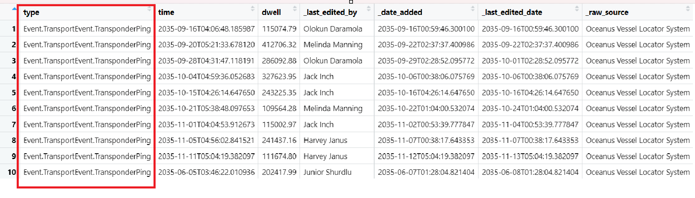
From the table above, we can see that the text in the type column is not tidy. I will tidy the type column by splitting it into three new separate columns called event1, event2, and event3. However, I will only keep the columns containing the values ‘TransportEvent’ and ‘TransponderPing’, which will be event2 and event3.
Splitting and Tidying the ‘type’ Column from mc2_edges data.frame
word_list <- strsplit(mc2_edges$type, "\\.")
# The code chunk below will be used to find the maximum number of elements in any split
max_elements <- max(lengths(word_list)) #to find the maximum number of elements in any split
#The code chunk below will be used to pad shorter splits with NA values to make them all the same length.
word_list_padded <- lapply(word_list,
function(x) c(x, rep(NA, max_elements - length(x)))) #to pad shorter splits with NA values to make them all the same length.
word_df <- do.call(rbind, word_list_padded)
colnames(word_df) <- paste0("event", 1:max_elements)
# Since the output above is a matrix, the code chunk below is used to convert word_df into a tibble data.frame.
word_df <- as_tibble(word_df) %>%
select(event2, event3)
# The code chunk below appends the extracted columns back to mc2_edges tibble data.frame
mc2_edges <- mc2_edges %>%
cbind(word_df)This code splits the type column into multiple components, pads shorter entries with NAs, and integrates them back into the mc2_edges data.frame as new columns.
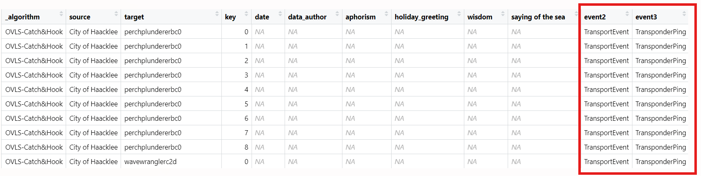
Observation
As we can see here, two new columns, event2 and event3, have been created and appended to the mc2_edges data.frame.
Initial EDA of mc2_edges data.frame
After cleaning and preparing the mc2_edges data.frame, I want to understand how the newly formed structure looks. Let’s make use of the DataExplorer package to visualize it.
The code below uses the plot_intro function, which is part of the DataExplorer package. This function provides a high-level summary of the mc2_edges data.frame, offering insights into its structure and content.
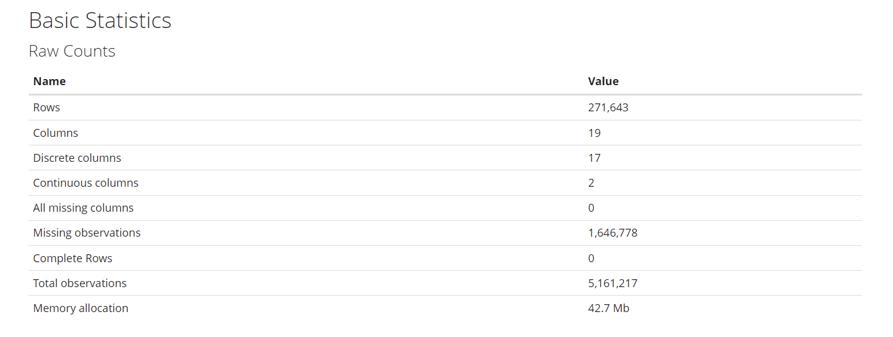
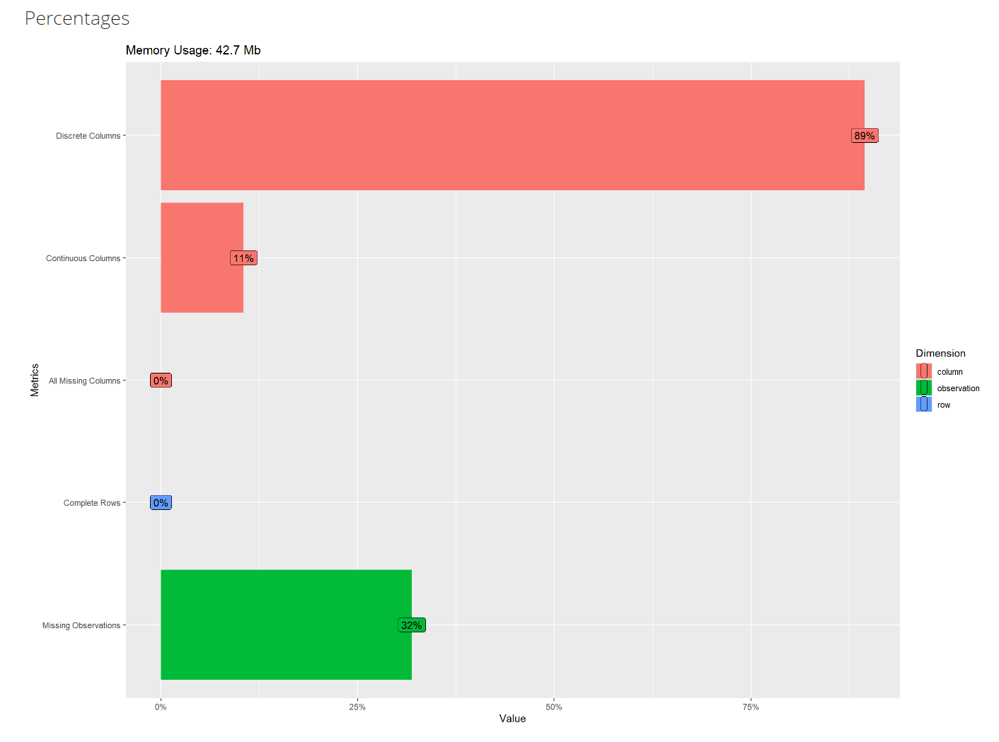
# Plot introduction of the data
plot_intro(mc2_edges, title = "Introduction of mc2_edges Data")The plot_str function below generates a plot that visualizes the structure of mc2_edges data.frame, showing the relationships between different columns and their types.
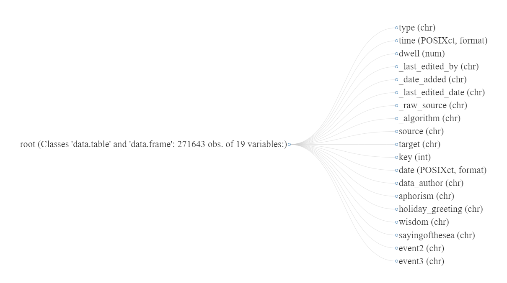
# Generate and display the data structure plot
plot_str(mc2_edges)The plot_missing function below generates a visualization that helps to identify and understand the distribution of missing values within mc2_edges data.frame.
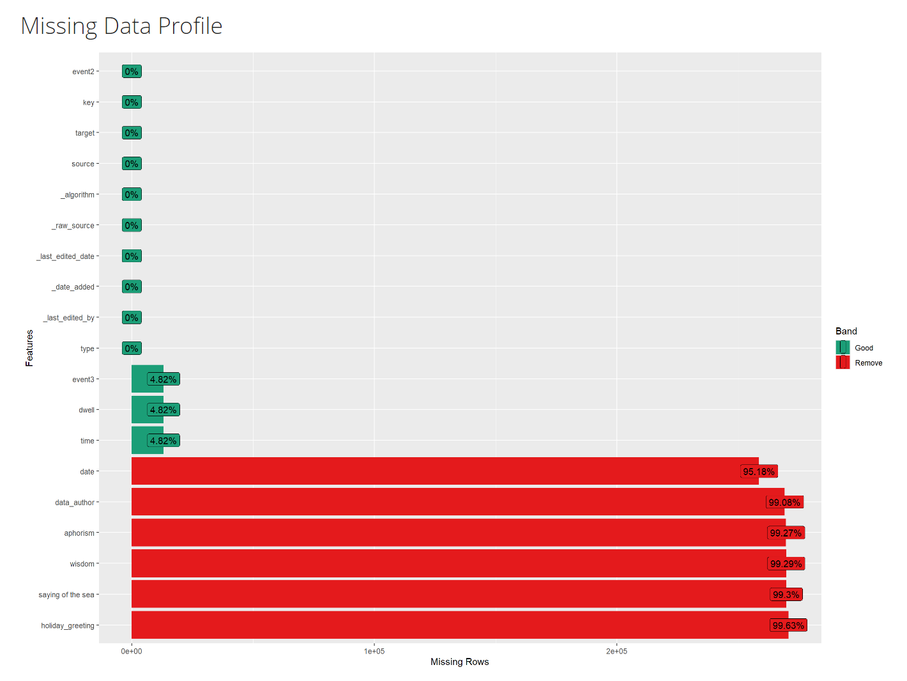
# Plot missing values
plot_missing(mc2_edges, title = "Missing Values in mc2_edges Data")Further cleaning of mc2_edges data.frame
After the initial EDA, I will remove columns from mc2_edges data.frame that are unnecessary to complete Mini-Challenge 2.
Dropping unnecessary columns from mc2_edges data.frame
mc2_edges_cleaned <- mc2_edges %>%
select(-c(`type`, `_last_edited_by`, `_date_added`, `_last_edited_date`, `_raw_source`, `_algorithm`, `key`, `data_author`, `aphorism`, `holiday_greeting`, `wisdom`, `saying of the sea`))The code above removes unnecessary columns from mc2_edges that are not needed for analysis, and then assigns the cleaned-up version to a new data.frame called mc2_edges_cleaned.
Next, let’s use glimpse() to check what mc2_edges_cleaned looks like.
glimpse(mc2_edges_cleaned)Rows: 271,643
Columns: 7
$ time <dttm> 2035-09-16 04:06:48, 2035-09-20 05:21:33, 2035-09-28 04:31:47,…
$ dwell <dbl> 115074.79, 412706.32, 286092.88, 327623.95, 243225.35, 109564.2…
$ source <chr> "City of Haacklee", "City of Haacklee", "City of Haacklee", "Ci…
$ target <chr> "perchplundererbc0", "perchplundererbc0", "perchplundererbc0", …
$ date <dttm> NA, NA, NA, NA, NA, NA, NA, NA, NA, NA, NA, NA, NA, NA, NA, NA…
$ event2 <chr> "TransportEvent", "TransportEvent", "TransportEvent", "Transpor…
$ event3 <chr> "TransponderPing", "TransponderPing", "TransponderPing", "Trans…Before moving to the next task, it would be wise to save the tidied mc2_edges_cleaned data.frame into a physical file for future use. By doing so, repeating the steps above will not be necessary.
The code chunk below will be used to save mc2_edges_cleaned into R rds file format.
Warning
Since the file will be saved in the rds sub-folder within the data folder, ensure that the rds folder exists. If it does not, it needs to be created first.
write_rds(mc2_edges_cleaned, "data/rds/mc2_edges_cleaned.rds")This completes the data preparation process for the links data.frame of mc2_data, which is now stored in the mc2_edges_cleaned data.frame and saved as a physical mc2_edges_cleaned.rds file.
The next step is to clean and prepare the nodes data.frame of mc2_data.
Wrangling and tidying nodes data.frame
Extracting nodes and removing duplicates
The code chunk below extracts the nodes data.frame from mc2_data, parses it as a tibble data.frame called mc2_nodes, and removes duplicate rows using the distinct() function.
mc2_nodes <- as_tibble(mc2_data$nodes) %>%
distinct()Next, the code chunk below uses the glimpse() function to reveal the data structure of the mc2_nodes tibble data.frame.
glimpse(mc2_nodes)Rows: 5,637
Columns: 20
$ type <chr> "Entity.Commodity.Fish", "Entity.Commodity.Fish",…
$ `_last_edited_by` <chr> "Clepper Jessen", "Clepper Jessen", "Haenyeo Hyun…
$ `_date_added` <chr> "2033-09-04T00:00:00", "2034-01-21T00:00:00", "20…
$ `_last_edited_date` <chr> "2035-01-25T00:00:00", "2035-01-04T00:00:00", "20…
$ `_raw_source` <chr> "", "", "", "", "", "", "", "", "", "", "Oceanus:…
$ `_algorithm` <chr> "", "", "", "", "", "", "", "", "", "", "", "", "…
$ name <chr> "Cod/Gadus n.specificatae", "Birdseye/Pisces frig…
$ id <chr> "gadusnspecificatae4ba", "piscesfrigus900", "pisc…
$ Name <chr> NA, NA, NA, NA, NA, NA, NA, NA, NA, NA, "Haacklee…
$ Description <chr> NA, NA, NA, NA, NA, NA, NA, NA, NA, NA, NA, NA, N…
$ Activities <list> <NULL>, <NULL>, <NULL>, <NULL>, <NULL>, <NULL>, …
$ kind <chr> NA, NA, NA, NA, NA, NA, NA, NA, NA, NA, "city", "…
$ qty_tons <dbl> NA, NA, NA, NA, NA, NA, NA, NA, NA, NA, NA, NA, N…
$ date <chr> NA, NA, NA, NA, NA, NA, NA, NA, NA, NA, NA, NA, N…
$ flag_country <chr> NA, NA, NA, NA, NA, NA, NA, NA, NA, NA, NA, NA, N…
$ company <chr> NA, NA, NA, NA, NA, NA, NA, NA, NA, NA, NA, NA, N…
$ tonnage <int> NA, NA, NA, NA, NA, NA, NA, NA, NA, NA, NA, NA, N…
$ length_overall <int> NA, NA, NA, NA, NA, NA, NA, NA, NA, NA, NA, NA, N…
$ style <chr> NA, NA, NA, NA, NA, NA, NA, NA, NA, NA, NA, NA, N…
$ fish_species_present <list> <NULL>, <NULL>, <NULL>, <NULL>, <NULL>, <NULL>, …
Note
From the table above, the following data issues can be identified:
The column
datedata type is not in the correct format.The values in Activities and fish_species_present fields are in list data type, which will affect the ability to process and to analyse the data.
As shown in the screenshot below, some values in the Activities field are not ready to be analyse without further tidying (i.e. removing c(““)).
Correcting date data type from mc2_nodes data.frame
In the code chunk below, as_datetime() of lubridate package is used to convert date fields with character date into POSIXt format.
mc2_nodes$date <- as_datetime(mc2_nodes$date)Next, glimpse() will be used again to confirm if the process have been performed correctly.
glimpse(mc2_nodes)Rows: 5,637
Columns: 20
$ type <chr> "Entity.Commodity.Fish", "Entity.Commodity.Fish",…
$ `_last_edited_by` <chr> "Clepper Jessen", "Clepper Jessen", "Haenyeo Hyun…
$ `_date_added` <chr> "2033-09-04T00:00:00", "2034-01-21T00:00:00", "20…
$ `_last_edited_date` <chr> "2035-01-25T00:00:00", "2035-01-04T00:00:00", "20…
$ `_raw_source` <chr> "", "", "", "", "", "", "", "", "", "", "Oceanus:…
$ `_algorithm` <chr> "", "", "", "", "", "", "", "", "", "", "", "", "…
$ name <chr> "Cod/Gadus n.specificatae", "Birdseye/Pisces frig…
$ id <chr> "gadusnspecificatae4ba", "piscesfrigus900", "pisc…
$ Name <chr> NA, NA, NA, NA, NA, NA, NA, NA, NA, NA, "Haacklee…
$ Description <chr> NA, NA, NA, NA, NA, NA, NA, NA, NA, NA, NA, NA, N…
$ Activities <list> <NULL>, <NULL>, <NULL>, <NULL>, <NULL>, <NULL>, …
$ kind <chr> NA, NA, NA, NA, NA, NA, NA, NA, NA, NA, "city", "…
$ qty_tons <dbl> NA, NA, NA, NA, NA, NA, NA, NA, NA, NA, NA, NA, N…
$ date <dttm> NA, NA, NA, NA, NA, NA, NA, NA, NA, NA, NA, NA, …
$ flag_country <chr> NA, NA, NA, NA, NA, NA, NA, NA, NA, NA, NA, NA, N…
$ company <chr> NA, NA, NA, NA, NA, NA, NA, NA, NA, NA, NA, NA, N…
$ tonnage <int> NA, NA, NA, NA, NA, NA, NA, NA, NA, NA, NA, NA, N…
$ length_overall <int> NA, NA, NA, NA, NA, NA, NA, NA, NA, NA, NA, NA, N…
$ style <chr> NA, NA, NA, NA, NA, NA, NA, NA, NA, NA, NA, NA, N…
$ fish_species_present <list> <NULL>, <NULL>, <NULL>, <NULL>, <NULL>, <NULL>, …
Observation
As we can see now, the time and date columns have been converted to datetime format.
There are two more additional data issues can be observed. They are:
The values in Activities and fish_species_present columns are in list data type, which will affect the ability to process and to analyze the data.
As shown in the screenshot below, some values in the Activities and fish_species_presentcolumn are not ready to be analyze without further tidying (i.e. removing c(““)).
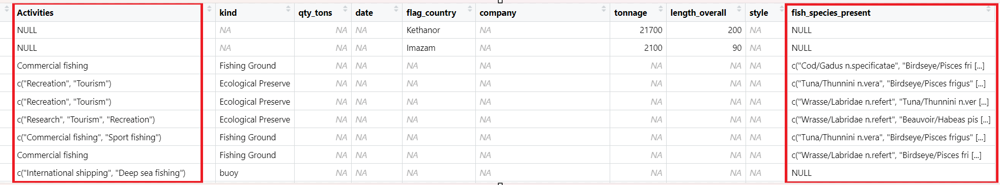
Tidying Text Field
In the code chunk below, mutate() from dplyr and gsub() from Base R are used to perform the data tidying task.
This cleans up the Activities and fish_species_present columns by removing unnecessary characters.
mc2_nodes <- mc2_nodes %>%
mutate(Activities = gsub("c[(]", "", Activities)) %>%
mutate(Activities = gsub("\"", "", Activities)) %>%
mutate(Activities = gsub("[)]", "", Activities))
mc2_nodes <- mc2_nodes %>%
mutate(fish_species_present = gsub("c[(]", "", fish_species_present)) %>%
mutate(fish_species_present = gsub("\"", "", fish_species_present)) %>%
mutate(fish_species_present = gsub("[)]", "", fish_species_present)) After executing the code chunk above, we can see from the screenshot below, that the text field in Activities and fish_species_present columns have been tidied.
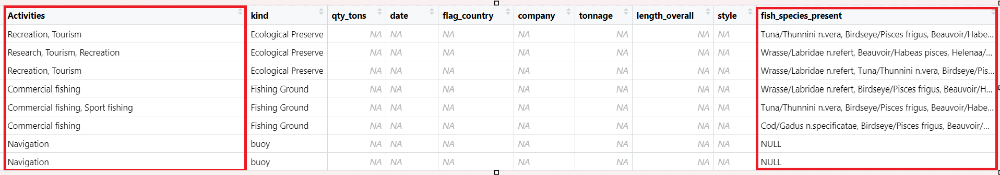
Initial EDA of mc2_nodes data.frame
Now, let’s use the DataExplorer package again to visualize the mc2_nodes data.frame in a similar manner as was done above for the mc2_edges data.frame.
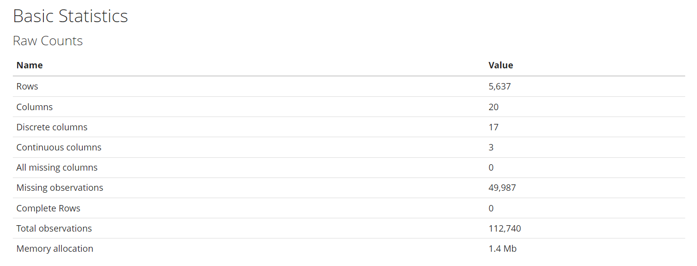
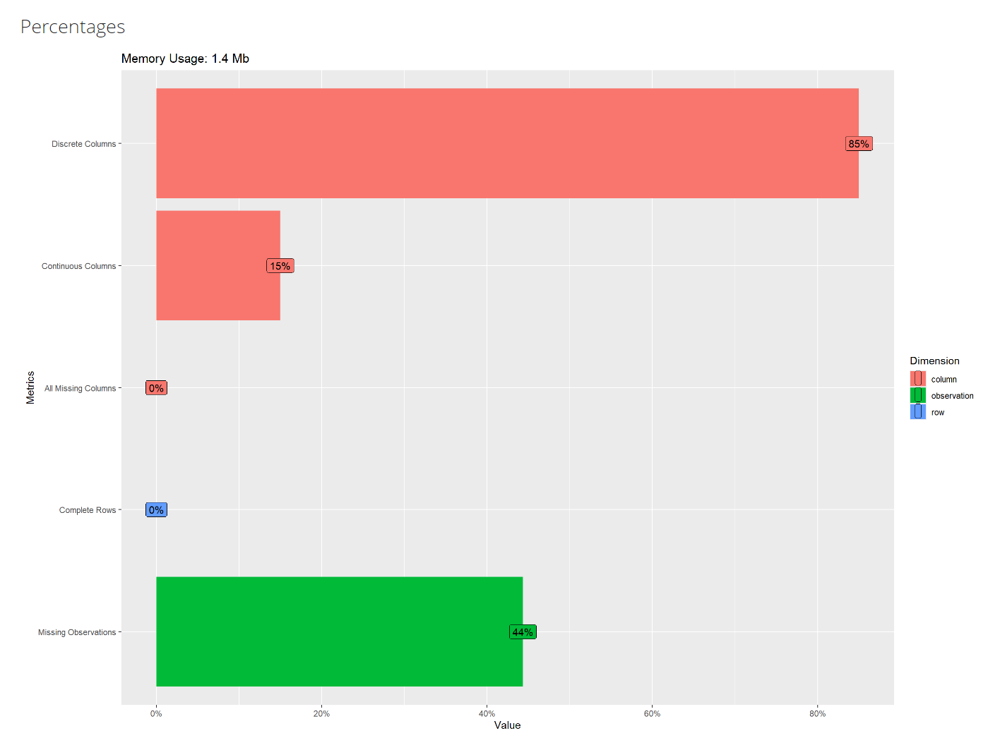
# Plot introduction of the data
plot_intro(mc2_nodes, title = "Introduction of mc2_nodes Data")The plot_str function below generates a plot that visualizes the structure of mc2_nodes data.frame, showing the relationships between different columns and their types.
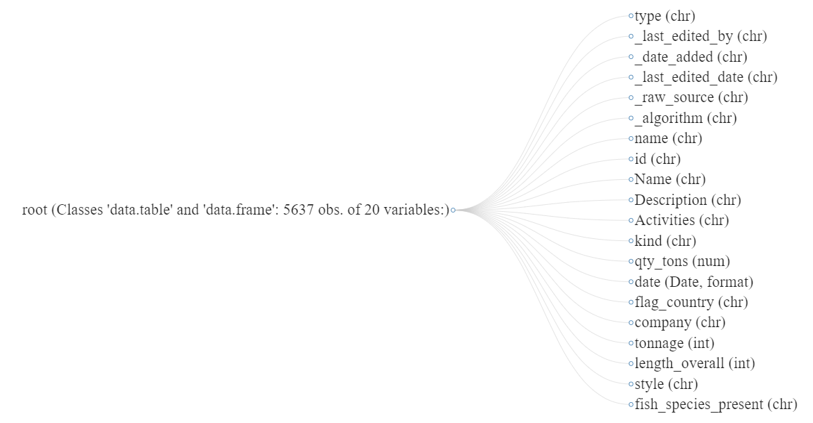
# Generate and display the data structure plot
plot_str(mc2_nodes)The plot_missing function below generates a visualization that helps to identify and understand the distribution of missing values within mc2_nodes data.frame.
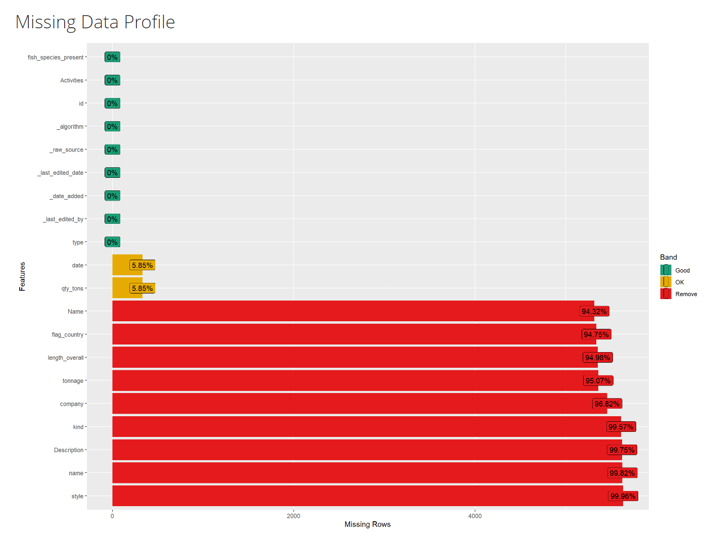
# Plot missing values
plot_missing(mc2_nodes, title = "Missing Values in mc2_nodes Data")Further Cleaning of mc2_nodes data.frame
After the initial EDA, I will remove columns from mc2_nodes data.frame that are unnecessary to complete Mini-Challenge 2.
Dropping unnecessary Columns from mc2_nodes data.frame
mc2_nodes_cleaned <- mc2_nodes %>%
select(-c(`_last_edited_by`, `_date_added`, `_last_edited_date`, `_raw_source`, `_algorithm`, `style`))The code above removes unnecessary columns from mc2_nodes that are not needed for analysis, and then assigns the cleaned-up version to a new data.frame called mc2_nodes_cleaned.
Next, let’s use glimpse() to check what mc2_nodes_cleaned looks like.
glimpse(mc2_nodes_cleaned)Rows: 5,637
Columns: 14
$ type <chr> "Entity.Commodity.Fish", "Entity.Commodity.Fish",…
$ name <chr> "Cod/Gadus n.specificatae", "Birdseye/Pisces frig…
$ id <chr> "gadusnspecificatae4ba", "piscesfrigus900", "pisc…
$ Name <chr> NA, NA, NA, NA, NA, NA, NA, NA, NA, NA, "Haacklee…
$ Description <chr> NA, NA, NA, NA, NA, NA, NA, NA, NA, NA, NA, NA, N…
$ Activities <chr> "NULL", "NULL", "NULL", "NULL", "NULL", "NULL", "…
$ kind <chr> NA, NA, NA, NA, NA, NA, NA, NA, NA, NA, "city", "…
$ qty_tons <dbl> NA, NA, NA, NA, NA, NA, NA, NA, NA, NA, NA, NA, N…
$ date <dttm> NA, NA, NA, NA, NA, NA, NA, NA, NA, NA, NA, NA, …
$ flag_country <chr> NA, NA, NA, NA, NA, NA, NA, NA, NA, NA, NA, NA, N…
$ company <chr> NA, NA, NA, NA, NA, NA, NA, NA, NA, NA, NA, NA, N…
$ tonnage <int> NA, NA, NA, NA, NA, NA, NA, NA, NA, NA, NA, NA, N…
$ length_overall <int> NA, NA, NA, NA, NA, NA, NA, NA, NA, NA, NA, NA, N…
$ fish_species_present <chr> "NULL", "NULL", "NULL", "NULL", "NULL", "NULL", "…The tidied mc2_nodes_cleaned data.frame will then be saved into a physical file for future use. By doing so, repeating the steps above will not be necessary.
The code chunk below will be used to save mc2_nodes_cleaned into R rds file format.
write_rds(mc2_nodes_cleaned, "data/rds/mc2_nodes_cleaned.rds")This completes the data preparation process for the nodes data.frame of mc2_data, which is now stored in the mc2_nodes_cleaned data.frame and saved as a physical mc2_nodes_cleaned.rds file.
Importing Geographical Data in GEOJSON format
Next I need to import geographical data. The data is in the form of GEOJSON file. GEOJSON is an open standard format designed for representing simple geographical features, along with their non-spatial attributes. It is based on the JSON format. I will import this using the sf package.
In the code chunk below, st_read() of sf package is used to import a geographical file in geojson format into R.
oceanusgeography = st_read("data/OceanusGeography.geojson") %>%
st_transform(crs = 4326)Reading layer `OceanusGeography' from data source
`C:\aryasiahaan\ISSS608-VAA\Take-home_Ex\Take-home_Ex03\data\OceanusGeography.geojson'
using driver `GeoJSON'
Simple feature collection with 29 features and 7 fields
Geometry type: GEOMETRY
Dimension: XY
Bounding box: xmin: -167.0654 ymin: 38.07452 xmax: -163.2723 ymax: 40.67775
Geodetic CRS: WGS 84
Thing to learn from the code chunk above
st_transform() is used to assign wgs84 (i.e. 4326) coordinates system to the output object.
The output R object (i.e. oceanusgeography) is an sf data.frame as shown below. Actually sf stand for simple feature.
class(oceanusgeography)[1] "sf" "data.frame"Next, glimpse() is used to display the structure of oceanusgeography sf data.frame.
glimpse(oceanusgeography)Rows: 29
Columns: 8
$ Name <chr> "Suna Island", "Thalassa Retreat", "Makara Shoal"…
$ Description <chr> "Large island of Oceanus", "Smaller island of Oce…
$ X.note <chr> "Suna is 'sand' or 'gritty' in Japanese", "Thalas…
$ type <chr> "Entity.Location.Region", "Entity.Location.Region…
$ X.Kind <chr> "Island", "Island", "Island", "Island", "Fishing …
$ Activities <list> "Residential", "Residential", "Recreation", <"To…
$ fish_species_present <list> <>, <>, <>, <>, <"Cod/Gadus n.specificatae", "Bi…
$ geometry <GEOMETRY [°]> MULTIPOLYGON (((-166.0111 3..., MULTIPOL…
Note
The geometry column indicate the simple feature geometry is multipolygon. However, if the data.frame is examined closely, we can see that the geographical data are captured in polygon and point features.
Visualising Geographical Data with ggplot2
It is always a good practice to visualize the sf data.frame in a map.
In the code chunk below, geom_sf() of ggplot2 package is used to plot the sf data.frame in R.
ggplot(data = oceanusgeography) +
geom_sf()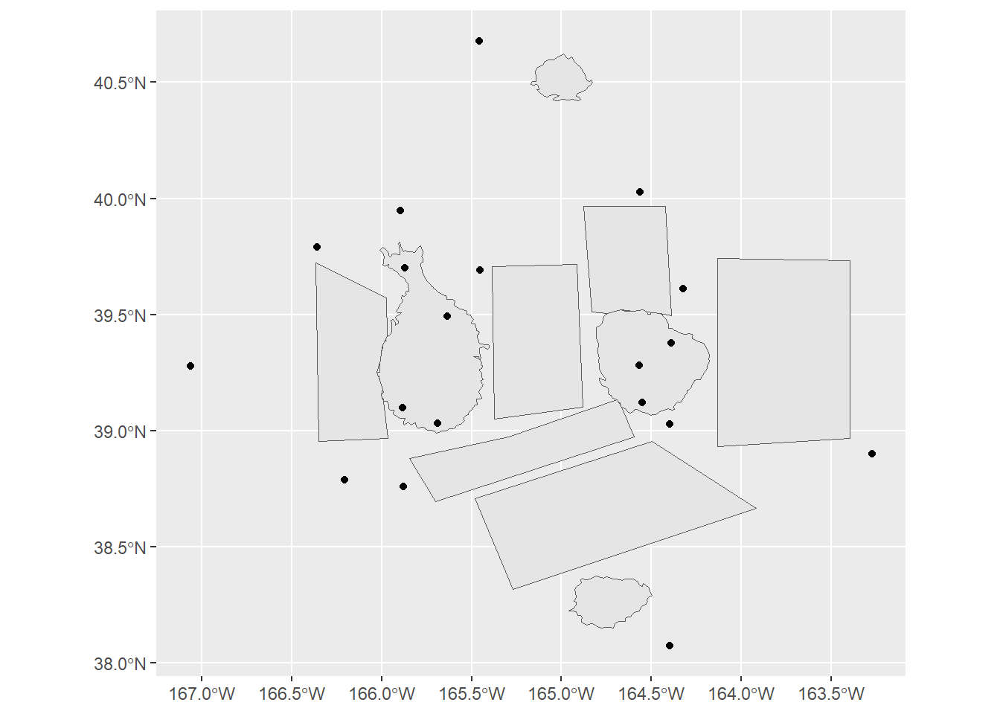
Before moving on to next section, let’s save oceanusgeography into rds format for future use by using the code chunk below.
write_rds(oceanusgeography, "data/rds/oceanusgeography.rds")This completes the data preparation process for the oceanusgeography data.frame, which is now stored in the oceanusgeography data.frame and saved as a physical oceanusgeography.rds file.
Importing Geographical Data in ESRI shapefile format
In the code chunk below, st_read() of sf package is used to import a geographical file in ESRI shapefile format into R.
oceanuslocations <- st_read(dsn = "data/shp",
layer = "Oceanus Geography")Reading layer `Oceanus Geography' from data source
`C:\aryasiahaan\ISSS608-VAA\Take-home_Ex\Take-home_Ex03\data\shp'
using driver `ESRI Shapefile'
Simple feature collection with 27 features and 7 fields
Geometry type: POINT
Dimension: XY
Bounding box: xmin: -167.0654 ymin: 38.07452 xmax: -163.2723 ymax: 40.67775
Geodetic CRS: WGS 84Next class() is used verify if the oceanuslocations is indeed in sf data.frame.
class(oceanuslocations)[1] "sf" "data.frame"Similarly, glimpse() is used to reveal the structure of oceanuslocations data.frame.
glimpse(oceanuslocations)Rows: 27
Columns: 8
$ Name <chr> "Haacklee", "Port Grove", "Lomark", "Himark", "Paackland", …
$ Descriptio <chr> NA, NA, NA, NA, NA, "Adimistrative seat of Oceanus", NA, NA…
$ X.note <chr> NA, NA, NA, NA, NA, NA, NA, NA, NA, NA, NA, NA, NA, NA, NA,…
$ Activities <chr> "Tourism,Local shipping", "Tourism,Research", "Deep sea fis…
$ type <chr> "Entity.Location.City", "Entity.Location.City", "Entity.Loc…
$ X.Kind <chr> "city", "city", "city", "city", "city", "city", "city", "bu…
$ fish_speci <chr> NA, NA, NA, NA, NA, NA, NA, NA, NA, NA, NA, NA, NA, NA, NA,…
$ geometry <POINT [°]> POINT (-165.6908 39.03215), POINT (-165.8855 39.10005…Let’s visualize the geographical data by using geom_sf() of ggplot2 as shown in the code chunk below.
ggplot(data = oceanuslocations) +
geom_sf()
Before moving on to the next section, the code chunk below is used to save oceanuslocations into an rds file format.
write_rds(oceanuslocations,
"data/rds/oceanuslocations.rds")This completes the data preparation process for the oceanuslocations, which is now stored in the oceanuslocations data.frame and saved as a physical oceanuslocations.rds file.
DATA ANALYSIS
After completing the data preparation process, the next step is to perform the analysis required to complete Mini-Challenge 2. From the background information above, we know that “SouthSeafood Express Corp” has been caught fishing illegally. Now, let’s see what we can discover from the available data regarding their illegal behavior.
Importing Edges Data
Now it is time to bring mc2_edges_cleaned.rds into R
mc2_edges_cleaned <- read_rds("data/rds/mc2_edges_cleaned.rds")Next, unique() is used to list the unique classes in event3 column of mc2_edges data.frame.
unique(mc2_edges_cleaned$event3)[1] "TransponderPing" NA The output above shows that there are two unique classes in the event3. They are: TransponderPing and NA.
Extract Vessel Movement Data
The code chunk below is used to extract vessel movement data based on TransponderPing from mc2_edges.
Thing to learn from the code chunk above
filter()is used to select records with event3 is TransponderPing, andselect()is used to fields that are needed to be saved
vessel_movement_data <- mc2_edges_cleaned %>%
filter(event3 == "TransponderPing") %>%
select(time, dwell, source, target)Next, unique() is used to list unique classes in source field.
unique(vessel_movement_data$source) [1] "City of Haacklee" "City of Lomark"
[3] "City of Himark" "City of Paackland"
[5] "City of South Paackland" "City of Port Grove"
[7] "Exit West" "Nav 3"
[9] "Nav D" "Nav B"
[11] "Nav A" "Nav C"
[13] "Nav 2" "Nav 1"
[15] "Exit East" "Exit South"
[17] "Exit North" "Nav E"
[19] "Cod Table" "Ghoti Preserve"
[21] "Wrasse Beds" "Nemo Reef"
[23] "Don Limpet Preserve" "Tuna Shelf" as well as oceanuslocation.
unique(oceanuslocations$Name) [1] "Haacklee" "Port Grove" "Lomark"
[4] "Himark" "Paackland" "Centralia"
[7] "South Paackland" "Exit West" "Nav 3"
[10] "Nav D" "Nav B" "Nav A"
[13] "Nav C" "Nav 2" "Nav 1"
[16] "Exit East" "Exit South" "Exit North"
[19] "Nav E" "Don Limpet Preserve" "Tuna Shelf"
[22] "Makara Shoal" "Silent Sanctuary" "Cod Table"
[25] "Ghoti Preserve" "Wrasse Beds" "Nemo Reef"
Note
Because later we are going to append the coordinates values from oceanuslocations to vessel_movement_data, it is very important for to ensure that the class values in source column of vessel_movement_data is similar to Name column of oceanuslocations.
In the code chunk below, gsub() is used to remove “City of” from source column. At the same time, gsub() is used to exclude the extra white space in from of the words.
vessel_movement_data <- vessel_movement_data%>%
mutate(source = gsub("^City of", "", source)) %>%
mutate(source = gsub("^\\s+", "", source))Notice that the words “City of” have been remove from all records in source column from vessel_movement_data data.frame as shown below.
unique(vessel_movement_data$source) [1] "Haacklee" "Lomark" "Himark"
[4] "Paackland" "South Paackland" "Port Grove"
[7] "Exit West" "Nav 3" "Nav D"
[10] "Nav B" "Nav A" "Nav C"
[13] "Nav 2" "Nav 1" "Exit East"
[16] "Exit South" "Exit North" "Nav E"
[19] "Cod Table" "Ghoti Preserve" "Wrasse Beds"
[22] "Nemo Reef" "Don Limpet Preserve" "Tuna Shelf" Further Data Wrangling
In the code chunk below, st_coordinate() of sf package is used to extract coordinates from oceanuslocations sf data.frame.
coords <- st_coordinates(oceanuslocations)Next, code chunk below is used to drop the geometry column of oceanuslocations sf data.frame by using st_drop_geometry() of sf package and save the output into a new data.frame called oceanuslocations_df.
oceanuslocations_df <- oceanuslocations %>%
st_drop_geometry()Then, the code chunk below is to append the x- and y-coodinate values from coords list into the XCOORD and YCOORD columns of oceanuslocations_df respectively.
oceanuslocations_df$XCOORD <- coords[, "X"]
oceanuslocations_df$YCOORD <- coords[, "Y"]In the code chunk below, class() is used to confirm that the output is indeed a data.frame.
class(oceanuslocations_df)[1] "data.frame"Lastly, the code chunk below is used to tidy oceanuslocations_df by selecting the necessary columns only and at the same time, rename X.Kind to loc_type.
oceanuslocations_df <- oceanuslocations_df %>%
select(Name, type, X.Kind, XCOORD, YCOORD) %>%
rename(loc_type = X.Kind)In the code chunk below, left_join() of dplyr package is used to append columns in oceanuslocations_df data.frame to vessel_movement_data data.frame by matching the source column vessel_movement_data data.frame and the Name column from oceanuslocations_df data.frame.
vessel_movement_data <- vessel_movement_data %>%
left_join(oceanuslocations_df,
by = c("source" = "Name"))Next, this newly updated vessel_movement_data data.frame will be saved to a physical vessel_movement_data.rds file
write_rds(vessel_movement_data, "data/rds/vessel_movement_data.rds")Creating Vessel Trajectory Data
Now it is time to convert the vessel movement data into vessel trajectory data. A trajectory is a sequence of observations in time and space, for examples, the path formed by fishing vessels.
In the code chunk below, st_as_sf() of sf package is used to convert vessel_movement_data data.frame into sf point data.frame by using values in XCOORD and YCOORD columns. The output is an sf data.frame called vessel_movement_sf.
vessel_movement_sf <- vessel_movement_data %>%
st_as_sf(coords = c("XCOORD", "YCOORD"),
crs = 4326)Next arrange() is used to sort the records according to the vessels’ name (i.e. target) and navigation time (i.e. time)
vessel_movement_sf <- vessel_movement_sf %>%
arrange(target, time)Lastly, st_cast() of sf package is used to convert vessel_movement_sf from point features into linestring features called vessel_trajectory.
vessel_trajectory <- vessel_movement_sf %>%
group_by(target) %>%
summarize(do_union = FALSE) %>%
st_cast("LINESTRING")glimpse(vessel_trajectory)Rows: 296
Columns: 2
$ target <chr> "albacoreangler47d", "albacoreassaulter482", "amberjackassaul…
$ geometry <LINESTRING [°]> LINESTRING (-164.5496 39.11..., LINESTRING (-164.3…glimpse(vessel_trajectory)Rows: 296
Columns: 2
$ target <chr> "albacoreangler47d", "albacoreassaulter482", "amberjackassaul…
$ geometry <LINESTRING [°]> LINESTRING (-164.5496 39.11..., LINESTRING (-164.3…Now that I have the required vessel trajectory data, I need to find out which vessels belong to “SouthSeafood Express Corp”.
Let’s begin the investigation!
Investigate ‘type’ column from the nodes data
Next, I will use the unique() function from the base R package to see all the distinct entries in the type column of the mc2_nodes_cleaned data.frame.
unique(mc2_nodes_cleaned$type) [1] "Entity.Commodity.Fish" "Entity.Location.City"
[3] "Entity.Document.DeliveryReport" "Entity.Vessel.FishingVessel"
[5] "Entity.Vessel.Other" "Entity.Vessel.Ferry.Passenger"
[7] "Entity.Vessel.CargoVessel" "Entity.Vessel.Ferry.Cargo"
[9] "Entity.Vessel.Research" "Entity.Vessel.Tour"
[11] "Entity.Location.Point" "Entity.Location.Region"
Observation
The type column from the nodes data seems to contain a mix of information. Some of the entries appear interesting and useful for analysis, including:
Entity.Commodity.Fish
Entity.Document.DeliveryReport
Entity.Location.City
Entity.Location.Point
Entity.Location.Region
Entity.Vessel.CargoVessel
Entity.Vessel.FishingVessel
The other entries seem useless.
Next, I will try to find out the count of each entry. The code chunk below allows me to see the count of unique value in each entry.
nodes_type_counts <- mc2_nodes_cleaned %>%
group_by(type) %>%
summarise(count = n())
# Display the result
print(nodes_type_counts)# A tibble: 12 × 2
type count
<chr> <int>
1 Entity.Commodity.Fish 10
2 Entity.Document.DeliveryReport 5307
3 Entity.Location.City 6
4 Entity.Location.Point 12
5 Entity.Location.Region 6
6 Entity.Vessel.CargoVessel 100
7 Entity.Vessel.Ferry.Cargo 2
8 Entity.Vessel.Ferry.Passenger 3
9 Entity.Vessel.FishingVessel 178
10 Entity.Vessel.Other 5
11 Entity.Vessel.Research 2
12 Entity.Vessel.Tour 6
Observation
Based on the table above, we can see that there are:
10 Fish Types.
5307 Delivery Reports.
6 City Names
12 Point Locations
6 Region Locations
100 Cargo Vessels.
178 Fishing Vessels.
# Filter fishing vessels and rename specific columns while keeping all others
fishing_vessel <- mc2_nodes_cleaned %>%
filter(type %in% c("Entity.Vessel.FishingVessel")) %>%
rename(
fishing_vessel_id = id,
fishing_vessel_name = Name
)glimpse(fishing_vessel)Rows: 178
Columns: 14
$ type <chr> "Entity.Vessel.FishingVessel", "Entity.Vessel.Fis…
$ name <chr> NA, NA, NA, NA, NA, NA, NA, NA, NA, NA, NA, NA, N…
$ fishing_vessel_id <chr> "wavewranglerc2d", "yellowfintunataker08b", "arct…
$ fishing_vessel_name <chr> "Wave Wrangler", "Yellowfin Tuna Taker", "Arctic …
$ Description <chr> NA, NA, NA, NA, NA, NA, NA, NA, NA, NA, NA, NA, N…
$ Activities <chr> "NULL", "NULL", "NULL", "NULL", "NULL", "NULL", "…
$ kind <chr> NA, NA, NA, NA, NA, NA, NA, NA, NA, NA, NA, NA, N…
$ qty_tons <dbl> NA, NA, NA, NA, NA, NA, NA, NA, NA, NA, NA, NA, N…
$ date <dttm> NA, NA, NA, NA, NA, NA, NA, NA, NA, NA, NA, NA, …
$ flag_country <chr> "Oceanus", "Oceanus", "Oceanus", "Oceanus", "Ocea…
$ company <chr> "Roth, Logan and Moreno", "Brown-Haas", "Smith, D…
$ tonnage <int> 700, 4500, 1500, 400, 300, 7400, 100, 6500, 600, …
$ length_overall <int> 110, 110, 80, 60, 50, 130, 10, 90, 70, 120, 110, …
$ fish_species_present <chr> "NULL", "NULL", "NULL", "NULL", "NULL", "NULL", "…After creating a new data.frame called fishing_vessel to isolate fishing vessel information, I want to find out which of these fishing vessels are registered under “SouthSeafood Express Corp”.
# Filter fishing vessels registered under "SouthSeafood Express Corp"
southseafood_fishing_vessels <- fishing_vessel %>%
filter(company == "SouthSeafood Express Corp")
# Display the result
print(southseafood_fishing_vessels)# A tibble: 2 × 14
type name fishing_vessel_id fishing_vessel_name Description Activities kind
<chr> <chr> <chr> <chr> <chr> <chr> <chr>
1 Enti… <NA> snappersnatcher7… Snapper Snatcher <NA> NULL <NA>
2 Enti… <NA> roachrobberdb6 Roach Robber <NA> NULL <NA>
# ℹ 7 more variables: qty_tons <dbl>, date <dttm>, flag_country <chr>,
# company <chr>, tonnage <int>, length_overall <int>,
# fish_species_present <chr>
Observation
The fishing vessels belonging to “SouthSeafood Express Corp” are:
Snapper Snatcher (
snappersnatcher7be)Roach Robber (
roachrobberdb6)
Visualising the Geo-Temporal Patterns of the Vessels
After identifying the vessels belonging to “SouthSeafood Express Corp,” I will visualize the geo-temporal patterns of the vessels “Snapper Snatcher” and “Roach Robber.”
Let’s start with “Snapper Snatcher.” The code chunk below selects and isolates the appropriate data records belonging to “Snapper Snatcher” using their vessel ID, snappersnatcher7be, located within the target column in the vessel_trajectory data.frame. The result will be stored in a new data.frame called snapsnatch_trajectory.
snapsnatch_trajectory <- vessel_trajectory %>%
filter(target == "snappersnatcher7be")Next, the appropriate functions of ggplot2 is used to plot the selected vessel “Snapper Snatcher” trajectories by using the code chunk below.
# Plot the data
ggplot() +
# Plot the base map using oceanusgeography
geom_sf(data = oceanusgeography) +
# Plot the trajectory as LINESTRING for the selected vessel
geom_sf(data = snapsnatch_trajectory,
aes(color = factor(target)),
size = 1) +
theme_minimal() +
# Plot the individual points for the selected vessel
geom_sf(data = vessel_movement_sf %>% filter(target == "snappersnatcher7be"),
aes(color = factor(target)),
size = 2) +
# Add labels to the individual points
geom_sf_text(data = vessel_movement_sf %>% filter(target == "snappersnatcher7be"),
aes(label = source, geometry = geometry),
size = 3,
color = "black") +
labs(title = "Trajectories of Snapper Snatcher",
x = "Longitude", y = "Latitude", color = "ID")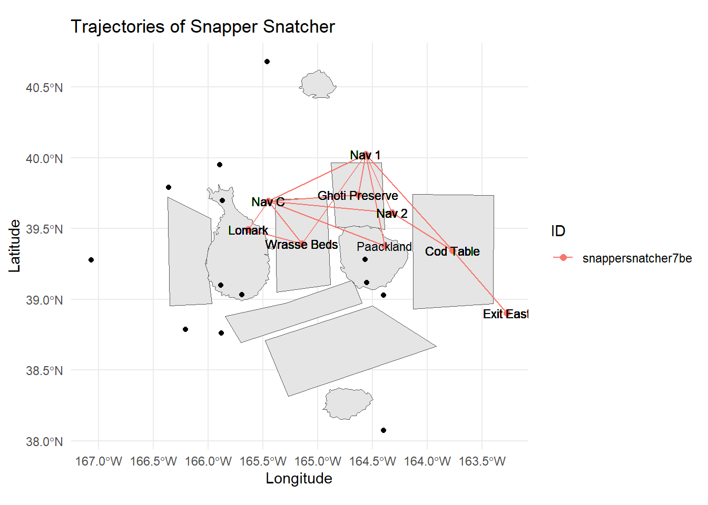
Observation
From the observations above, it is evident that Snapper Snatcher visited and dwelled at Ghoti Preserve, an ecological site not intended for fishing. This behavior is definitely suspicious.
Now let’s do the same for the second “SouthSeafood Express Corp” vessel, which is “Roach Robber” with the vessel ID roachrobberdb6 and store the data in roachrob_trajectory data.frame.
roachrob_trajectory <- vessel_trajectory %>%
filter(target == "roachrobberdb6")Next, the appropriate functions of ggplot2 is used to plot the selected vessel “Roach Robber” trajectories by using the code chunk below.
# Plot the data
ggplot() +
# Plot the base map using oceanusgeography
geom_sf(data = oceanusgeography) +
# Plot the trajectory as LINESTRING for the selected vessel
geom_sf(data = roachrob_trajectory,
aes(color = factor(target)),
size = 1) +
theme_minimal() +
# Plot the individual points for the selected vessel
geom_sf(data = vessel_movement_sf %>% filter(target == "roachrobberdb6"),
aes(color = factor(target)),
size = 2) +
# Add labels to the individual points
geom_sf_text(data = vessel_movement_sf %>% filter(target == "roachrobberdb6"),
aes(label = source, geometry = geometry),
size = 3,
color = "black") +
labs(title = "Trajectories of Roach Robber",
x = "Longitude", y = "Latitude", color = "ID")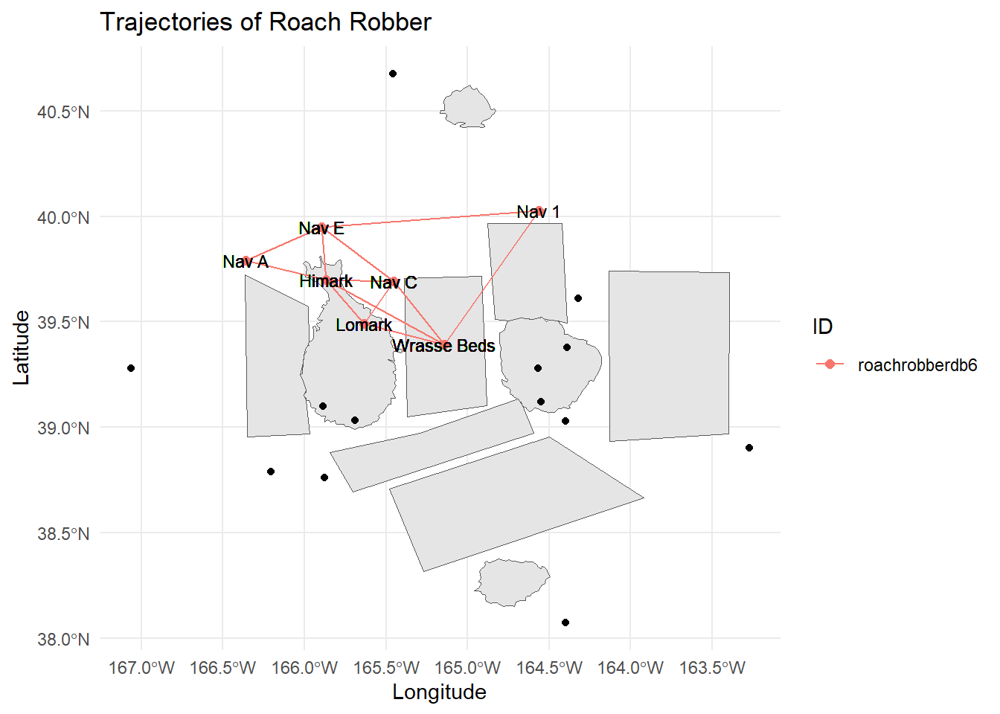
Observation
From the observations above, it is appears that Roach Robber does not frequent any of the ecological preserve. No suspicious activity can be found.
Reference
Prof. Kam. Kickstarter2
Prof. Kam. Kickstarter3